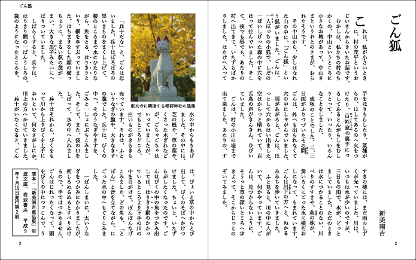

CSS組版(Vivliostyle)によるページレイアウト
CSSでページのレイアウトを指定して、Vivliostyle Viewerで表示
Vivliostyleの紹介
印刷の世界と画⾯の世界を⼀元化
印刷物も様々な画面も
ひとまとめで扱える
Webブラウザさえあれば使える
HTMLとCSSだけ
オープンソース
github.com/vivliostyle/vivliostyle.js
ページの組版に役立つCSS仕様

日本語組版関係
縦書き
CSS Writing Modes
文字組・禁則処理
CSS Text
装飾・圏点
CSS Text Decoration
ルビ配置
CSS Ruby
段組
CSS Multi-column Layout
ページのレイアウト※
ページメディア
CSS Paged Media
柱や相互参照等
CSS Generated Content
図版の配置
CSS Page Floats
※W3Cで標準化作業中の仕様であり、現時点で利用できる環境は限られる